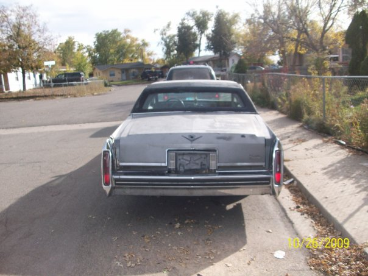
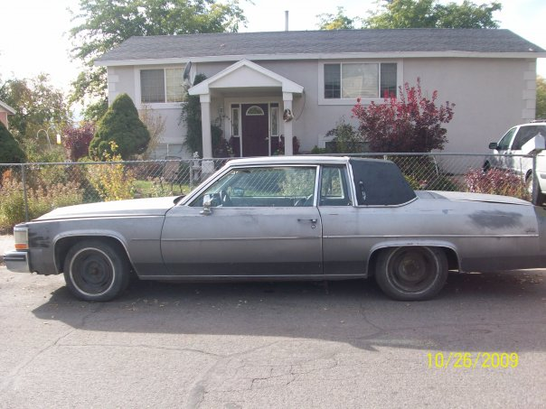
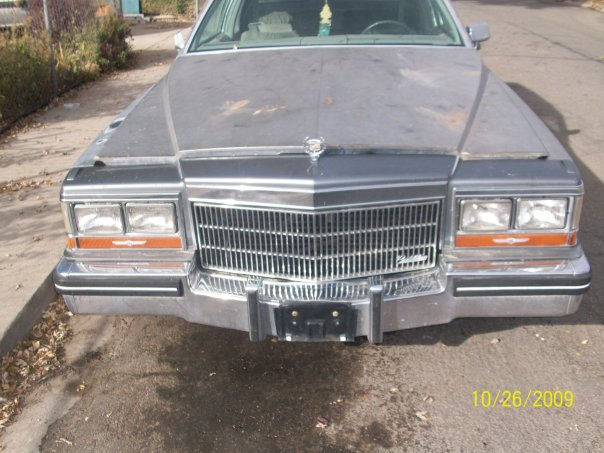
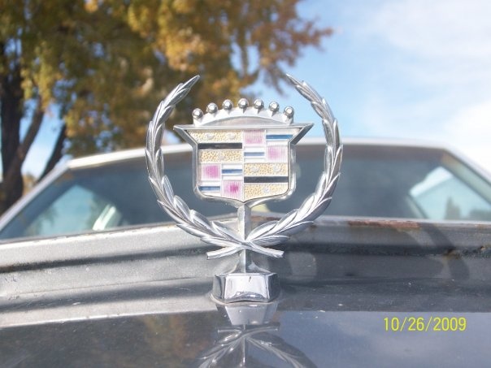

   
How I Got My First Car at 14
When I was 14 years old and in 9th grade, something unexpected happened that set me on a path of car obsession. One day after school, I was out walking with some friends around the neighborhood when we came across an old handicap motorized wheelchair sitting next to the sidewalk with a cardboard sign that said “FREE.” Without hesitation, I pushed it home.
I wasn’t sure if it would work, but I decided to try and fix it. I spliced a new cord from an old vacuum, hooked it up, and waited. To my surprise, it charged, and it worked! I was stoked. Once it was running, I started riding it around the neighborhood, even taking it to school a few times. I painted the wheels black and loosened the seat so it would lean back—giving it that “hydraulics” effect when I accelerated. It was my little piece of customization, and I was loving it.
As time went on, I took it even further. I removed the bottom fairing and painted it black with red flames. It was a joke, something fun and unique, but eventually, I grew bored of it. I figured I could make some money by selling it, so I listed it in the classifieds section of KSL for $200 (though I’d have been happy with $100).
I got a few calls offering ridiculously low prices—$50 or the classic, “When can I come look at it?” But I wasn’t ready to let it go for so little. Then, one day, I received a call that changed everything. An elderly man told me he couldn’t afford a wheelchair due to insurance issues and was in need of one. He then made an offer that made my jaw drop. He said, “I have an old car. It’ll need some work to get back on the road, but it runs and drives. Would you be willing to trade?”
I couldn’t believe it. He was offering me a car in exchange for the wheelchair, and it only got better when he told me it was a 1980 Cadillac Coupe DeVille. I didn’t even know what that car looked like, so I had to Google it. When I saw the pictures, I couldn’t contain my excitement—this car had so much potential!
Of course, I knew my grandparents wouldn’t let me get a car without their permission, so I had to ask them for approval. After a bit of begging, they agreed, and the car was on its way. The Cadillac arrived on a tow truck, and the man, along with his family, unloaded it and handed me the keys and title. I was thrilled!
I didn’t keep the car for long, though. I managed to get the battery charged, and I even drove it around the block once. But after a few months, my grandparents convinced me to sell it since it needed more work than I could handle at the time. Looking back, I now know I could’ve done the work myself, and I regret selling it.
That 1980 Cadillac Coupe DeVille was the start of my car knowledge journey. Since then, I’ve owned four other Cadillacs, along with various other similar vehicles. One day, I hope to buy another 1980 Cadillac Coupe DeVille and restore it to my liking!